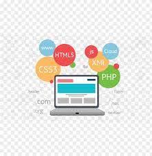

Hi, I'm Faisal Ali
and I am proficient
Work Experience

WEB developer (2021-2022)
As a web developer, my role is to create and maintain websites that are not only visually
appealing but also functional and user-friendly. I work with various programming languages, such
as HTML, CSS, JavaScript, and often utilize frameworks and libraries like React, Angular, or
Vue.js to streamline development
Frontend Developer (2021-2022)
I focus on the user interface (UI) and user experience (UX) aspects of
websites. This involves designing responsive layouts, optimizing website performance, and
ensuring cross-browser compatibility.
Content Management
I may work with content management systems (CMS) like WordPress or
custom CMS solutions to help clients easily update and manage their website content.
Graphics Designer
As a graphics designer, my role is to visually communicate ideas,
messages, and concepts through the use of various design elements.

Content Writer
As a content writer, my primary focus is on crafting engaging,
informative, and persuasive written content for various mediums, including websites, blogs,
social media, and more.